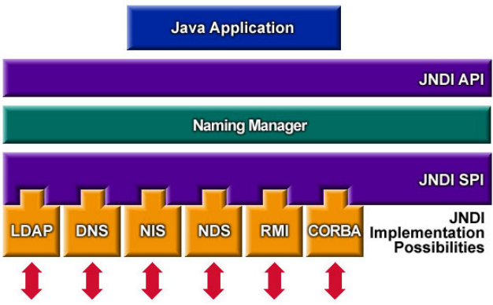
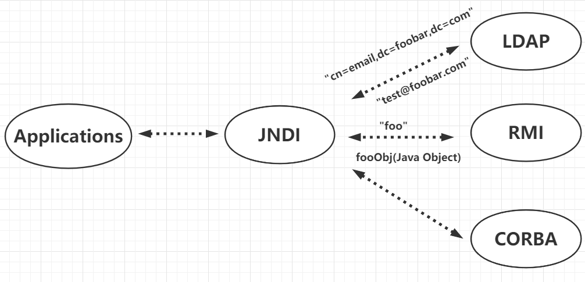
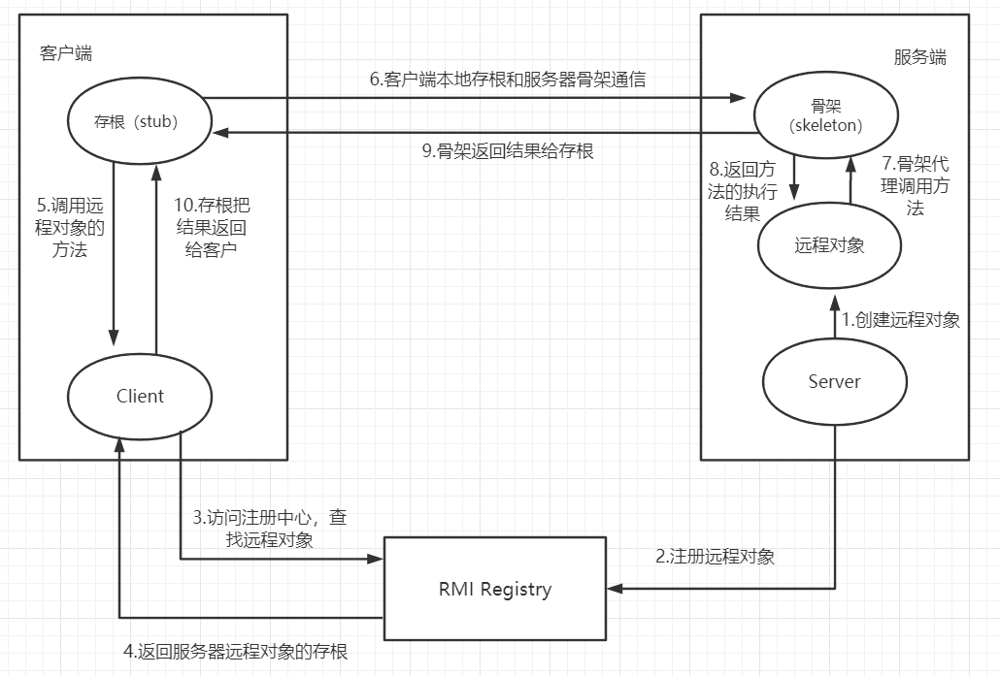
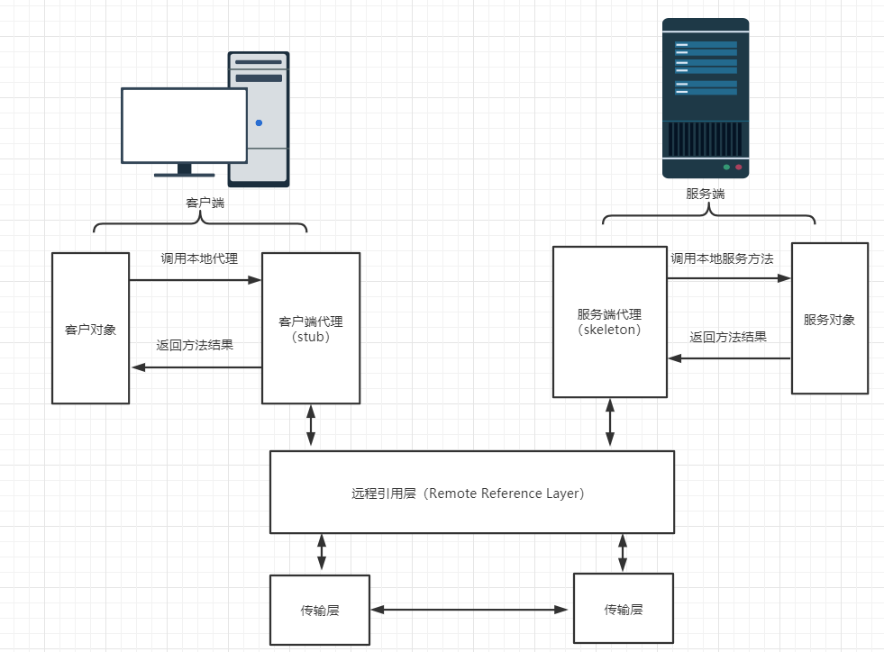

title: 浅析JNDI注入
no-emoji: false
date: 2021-01-15 14:21:16
tags:
top:
JNDI 的全称是 Java Naming and Directory Interface (Java 命名和目录接口 )SUN 公司提供的一种标准的Java命名系统接口，JNDI 提供统一的客户端 API，通过不同的服务供应接口(SPI)的实现，由管理者将 JNDI API 映射为特定的命名服务和目录服务，使得 JAVA 应用程可以通过 JNDI 实现和这些命名服务和目录服务之间的交互。
简而言之，JNDI 是一个简单的 JAVA API 接口，每一个对象都有一组唯一的键值绑定，将名字和对象绑定，可以通过名字检索指定的对象，而该对象可能存储在 Remote Method Invocation (RMI)、Lightweight Directory Access Protocol (LDAP)、Common Object Request Broker Architecture (CORBA) 等等。
用我自己的话来说，就是 JAVA 应用程序不直接去调用一些服务，而是通过 JNDI 这个统一的通用接口去调用相关的服务，(服务包括用户、网络、机器、对象和服务等各种资源，eg：打印机、数据库服务、远程JAVA对象)之前我们去调用一些服务的时候，需要写的代码差别很大，但是有了 JNDI 这一层，就可以利用 JNDI 的方式来轻松的访问其他服务，这样访问不同的服务的代码实现基本是一样的。

命名服务
命名服务，顾名思义，就是帮助我们对资源进行命名的服务，命名服务的目的是定义一个唯一的名字，这个名字的作用是可以用来定义唯一的资源。命名服务是一种简单的键值对绑定，可以通过键名检索值，RMI就是典型的命名服务。
目录服务
目录服务是命名服务的扩展，它与命名服务的区别就是它可以通过对象属性来检索对象。eg:你在学校查找某人，那么会通过 年级 -> 班级 -> 姓名，这种方式来进行查找。年级、班级、姓名就属于某个人的属性，这种层级关系很像是目录关系，所以这种存储对象的方式就叫目录服务。LDAP 是典型的目录服务。

如图所示，JNDI 在访问 rmi 时只是传了一个键 foo 过去，RMI 服务端返回一个对象；JNDI 在访问 LADP 时，传入了多个键值对，代表对象的属性，LADP 服务端根据属性信息，返回对象。
RMI 的全称是 Rmote Method Invocation，远程方法调用。具体实现的过程是：远程服务器提供具体的类和方法，本地客户端会通过某种方式获得远程类的一个代理，然后通过这个代理调用远程对象的方法。方法的参数是通过序列化和反序列化的方式传递的。
本地客户端获取远程类的代理的方式是，借助了 Registry (注册中心)
| Server | Registry | Client |
|---|---|---|
| 服务端，提供具体的远程对象 | 注册表，存放远程对象的相关信息（ip、端口、标识符） | 客户端，远程对象的调用者 |
其中 Server 和 Registry 可以放在同一个服务器上，也可以布置在不同的服务器上。
RMI 流程：

图中stub 就是客户端代理，skeleton 就是服务端代理
远程方法调用的通信模式如图所示
